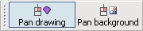

Canvas background image
Starting from ASSDraw3 (not as if I'm evisioning ASSDraw4 or something though ;)), you can load an image to be displayed as the canvas background so that you can trace the image.
First, you need the image file, obviously. Drag the file from Explorer (or My Computer if you prefer to call it that way) and drop it onto ASSDraw3's canvas. Voila! The image is set as canvas background!. Once it loaded, you can lower the opacity of the background to make it easier to work with.
Pan background button
Notice that the 'Pan background' button on the toolbar, that was previously disabled, is not clickable.

Here is how both the 'Pan drawing' and 'Pan background' buttons work. Both buttons are independent toggle buttons, meaning that they can be activated or deactivated independently to each other. If 'Pan drawing' is active then right-dragging the canvas pans the drawing. Likewise, if 'Pan background' is active, right-dragging the canvas pans the background. Since the buttons are not dependent to each other, you can pan both drawing and background at the same time or only one at a time. Take note that these settings also affect zooming.
Loading from clipboard
There are times when you do not have an image as a file, but rather stored temporarily in the clipboard, especially when you just did a 'print screen' action (PrtSc key) or copied (Ctrl+C) a portion of an image in an image editor. Instead of having to save the image to a file to load in ASSDraw3, you can just 'paste' the copied image onto the canvas by selecting menu Canvas > Paste or using the hotkey Ctrl+V.
Aligning drawing to background
You can align the [0,0] coordinate of the drawing to each of the corners or the center of the image by selecting menu Background > Reposition [0,0] or using the hotkeys as displayed in the menu.
Unloading background
Background image can be easily unloaded by selecting menu Background > Remove background.
This help file has been generated by the freeware version of HelpNDoc